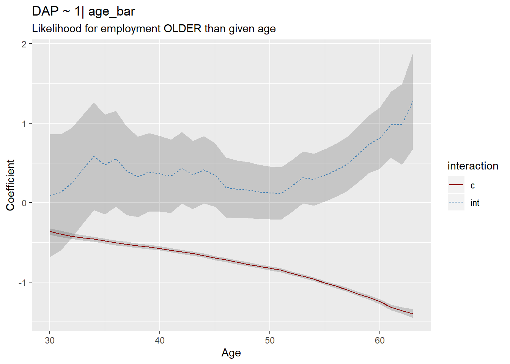
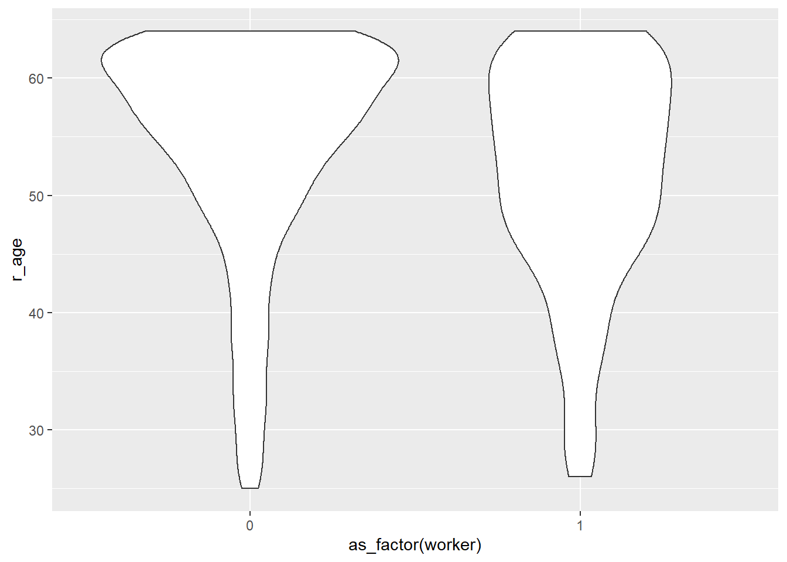

At the most basic level, the binomial regression is the same as the odds ratio. The logit is \(z\) in \[ z = \beta_0 + \beta_1*x_1 \]
The odds ratio can be calculated using \(e^\beta\). This is not to be confused with the odds, defined as \(e^z\)
glm(worker ~ wheelchair, data = mydata1, family = binomial(link='logit')) %>%
summary()##
## Call:
## glm(formula = worker ~ wheelchair, family = binomial(link = "logit"),
## data = mydata1)
##
## Deviance Residuals:
## Min 1Q Median 3Q Max
## -1.644 -1.644 0.774 0.774 2.030
##
## Coefficients:
## Estimate Std. Error z value Pr(>|z|)
## (Intercept) 1.052113 0.006133 171.54 <2e-16 ***
## wheelchair -2.976664 0.082573 -36.05 <2e-16 ***
## ---
## Signif. codes: 0 '***' 0.001 '**' 0.01 '*' 0.05 '.' 0.1 ' ' 1
##
## (Dispersion parameter for binomial family taken to be 1)
##
## Null deviance: 161696 on 139909 degrees of freedom
## Residual deviance: 159501 on 139908 degrees of freedom
## AIC: 159505
##
## Number of Fisher Scoring iterations: 4The usefulness of the model is that we can include more variables in the logit model.
glm(worker ~ wheelchair + educ + r_sex + log(inc_cont) + msasize + r_race,
data = mydata1, family = "binomial") %>%
summary()##
## Call:
## glm(formula = worker ~ wheelchair + educ + r_sex + log(inc_cont) +
## msasize + r_race, family = "binomial", data = mydata1)
##
## Deviance Residuals:
## Min 1Q Median 3Q Max
## -2.2934 -0.8572 0.6082 0.7642 2.8002
##
## Coefficients:
## Estimate Std. Error z value Pr(>|z|)
## (Intercept) -5.322495 0.088245 -60.315 < 2e-16 ***
## wheelchair -2.572083 0.085197 -30.190 < 2e-16 ***
## educ02 0.468227 0.036189 12.938 < 2e-16 ***
## educ03 0.692229 0.035640 19.423 < 2e-16 ***
## educ04 0.921706 0.036818 25.034 < 2e-16 ***
## educ05 1.069728 0.037972 28.172 < 2e-16 ***
## r_sex02 -0.625086 0.013206 -47.333 < 2e-16 ***
## log(inc_cont) 0.541558 0.007922 68.360 < 2e-16 ***
## msasize02 -0.049156 0.025447 -1.932 0.053402 .
## msasize03 0.054934 0.023152 2.373 0.017656 *
## msasize04 0.064071 0.023121 2.771 0.005586 **
## msasize05 0.006466 0.020236 0.320 0.749310
## msasize06 -0.044643 0.022783 -1.960 0.050054 .
## r_race02 0.115575 0.023892 4.837 1.32e-06 ***
## r_race03 -0.187200 0.029143 -6.423 1.33e-10 ***
## r_race04 0.029064 0.074095 0.392 0.694870
## r_race05 -0.052328 0.117384 -0.446 0.655751
## r_race06 -0.052508 0.037657 -1.394 0.163204
## r_race97 0.133523 0.039971 3.341 0.000836 ***
## ---
## Signif. codes: 0 '***' 0.001 '**' 0.01 '*' 0.05 '.' 0.1 ' ' 1
##
## (Dispersion parameter for binomial family taken to be 1)
##
## Null deviance: 161696 on 139909 degrees of freedom
## Residual deviance: 147082 on 139891 degrees of freedom
## AIC: 147120
##
## Number of Fisher Scoring iterations: 4glm(worker ~ wheelchair + educ + r_sex + log(inc_cont),
data = mydata1, family = "binomial") %>%
summary()##
## Call:
## glm(formula = worker ~ wheelchair + educ + r_sex + log(inc_cont),
## family = "binomial", data = mydata1)
##
## Deviance Residuals:
## Min 1Q Median 3Q Max
## -2.2104 -0.8474 0.6106 0.7565 2.7883
##
## Coefficients:
## Estimate Std. Error z value Pr(>|z|)
## (Intercept) -5.241759 0.084140 -62.30 <2e-16 ***
## wheelchair -2.566700 0.085148 -30.14 <2e-16 ***
## educ02 0.460377 0.036008 12.79 <2e-16 ***
## educ03 0.683978 0.035412 19.32 <2e-16 ***
## educ04 0.907634 0.036542 24.84 <2e-16 ***
## educ05 1.050884 0.037690 27.88 <2e-16 ***
## r_sex02 -0.623684 0.013193 -47.27 <2e-16 ***
## log(inc_cont) 0.536035 0.007664 69.94 <2e-16 ***
## ---
## Signif. codes: 0 '***' 0.001 '**' 0.01 '*' 0.05 '.' 0.1 ' ' 1
##
## (Dispersion parameter for binomial family taken to be 1)
##
## Null deviance: 161696 on 139909 degrees of freedom
## Residual deviance: 147202 on 139902 degrees of freedom
## AIC: 147218
##
## Number of Fisher Scoring iterations: 4glm(worker ~ educ*wheelchair + r_sex*wheelchair,
data = mydata1, family = "binomial") %>%
summary()##
## Call:
## glm(formula = worker ~ educ * wheelchair + r_sex * wheelchair,
## family = "binomial", data = mydata1)
##
## Deviance Residuals:
## Min 1Q Median 3Q Max
## -2.0450 -0.9721 0.6951 0.7696 2.5761
##
## Coefficients:
## Estimate Std. Error z value Pr(>|z|)
## (Intercept) 0.15818 0.03252 4.864 1.15e-06 ***
## educ02 0.76327 0.03476 21.958 < 2e-16 ***
## educ03 1.13909 0.03391 33.590 < 2e-16 ***
## educ04 1.56963 0.03449 45.513 < 2e-16 ***
## educ05 1.80106 0.03536 50.939 < 2e-16 ***
## wheelchair -3.30291 0.42594 -7.754 8.87e-15 ***
## r_sex02 -0.66250 0.01297 -51.068 < 2e-16 ***
## educ02:wheelchair -0.08730 0.45772 -0.191 0.84874
## educ03:wheelchair -0.03632 0.44420 -0.082 0.93483
## educ04:wheelchair 0.55698 0.45537 1.223 0.22128
## educ05:wheelchair 0.88793 0.46294 1.918 0.05511 .
## wheelchair:r_sex02 0.52593 0.17630 2.983 0.00285 **
## ---
## Signif. codes: 0 '***' 0.001 '**' 0.01 '*' 0.05 '.' 0.1 ' ' 1
##
## (Dispersion parameter for binomial family taken to be 1)
##
## Null deviance: 161696 on 139909 degrees of freedom
## Residual deviance: 152160 on 139898 degrees of freedom
## AIC: 152184
##
## Number of Fisher Scoring iterations: 5Education does not affect employment for wheelchair users any differently than for wheelchair users.
glm(worker ~ wheelchair*poly(r_age, 2, raw=T),
data = mydata1, family = "binomial") %>%
summary()##
## Call:
## glm(formula = worker ~ wheelchair * poly(r_age, 2, raw = T),
## family = "binomial", data = mydata1)
##
## Deviance Residuals:
## Min 1Q Median 3Q Max
## -1.9297 -1.1458 0.6154 0.7650 2.2799
##
## Coefficients:
## Estimate Std. Error z value Pr(>|z|)
## (Intercept) -2.880e+00 1.094e-01 -26.337 <2e-16
## wheelchair -2.234e+00 1.811e+00 -1.234 0.217
## poly(r_age, 2, raw = T)1 2.318e-01 5.012e-03 46.246 <2e-16
## poly(r_age, 2, raw = T)2 -2.937e-03 5.434e-05 -54.050 <2e-16
## wheelchair:poly(r_age, 2, raw = T)1 -5.604e-02 7.782e-02 -0.720 0.471
## wheelchair:poly(r_age, 2, raw = T)2 8.237e-04 8.119e-04 1.015 0.310
##
## (Intercept) ***
## wheelchair
## poly(r_age, 2, raw = T)1 ***
## poly(r_age, 2, raw = T)2 ***
## wheelchair:poly(r_age, 2, raw = T)1
## wheelchair:poly(r_age, 2, raw = T)2
## ---
## Signif. codes: 0 '***' 0.001 '**' 0.01 '*' 0.05 '.' 0.1 ' ' 1
##
## (Dispersion parameter for binomial family taken to be 1)
##
## Null deviance: 161696 on 139909 degrees of freedom
## Residual deviance: 151433 on 139904 degrees of freedom
## AIC: 151445
##
## Number of Fisher Scoring iterations: 4glm(worker ~ wheelchair*msasize,
data = mydata1, family = "binomial") %>%
summary()##
## Call:
## glm(formula = worker ~ wheelchair * msasize, family = "binomial",
## data = mydata1)
##
## Deviance Residuals:
## Min 1Q Median 3Q Max
## -1.7076 -1.5363 0.7303 0.8064 2.2634
##
## Coefficients:
## Estimate Std. Error z value Pr(>|z|)
## (Intercept) 0.94298 0.01508 62.521 < 2e-16 ***
## wheelchair -2.66849 0.17446 -15.296 < 2e-16 ***
## msasize02 0.01368 0.02430 0.563 0.5734
## msasize03 0.11471 0.02209 5.193 2.07e-07 ***
## msasize04 0.24244 0.02202 11.008 < 2e-16 ***
## msasize05 0.25003 0.01899 13.170 < 2e-16 ***
## msasize06 -0.13000 0.02172 -5.985 2.17e-09 ***
## wheelchair:msasize02 -0.23408 0.32709 -0.716 0.4742
## wheelchair:msasize03 -0.40728 0.29093 -1.400 0.1615
## wheelchair:msasize04 -0.13241 0.25888 -0.511 0.6090
## wheelchair:msasize05 -0.37035 0.24547 -1.509 0.1314
## wheelchair:msasize06 -0.62560 0.28260 -2.214 0.0268 *
## ---
## Signif. codes: 0 '***' 0.001 '**' 0.01 '*' 0.05 '.' 0.1 ' ' 1
##
## (Dispersion parameter for binomial family taken to be 1)
##
## Null deviance: 161696 on 139909 degrees of freedom
## Residual deviance: 158963 on 139898 degrees of freedom
## AIC: 158987
##
## Number of Fisher Scoring iterations: 4# turns age into a binary variable: older than x, 0 or 1
coefficients <- list()
for(i in 30:63){
# munging
df <- mydata1 %>%
mutate(age_bar = ifelse(r_age > i, T, F))
# Estimate model
fit <- glm(worker ~ wheelchair*age_bar, data = df, family = "binomial") %>%
summary()
out_element <- list(
"i" = i,
#M:age_barTRUE (coef represents liklihood to take M trip if over age i)
"coefficient_c" = fit$coefficients[3, 1],
"coefficient_int" = fit$coefficients[4, 1],
"stderror_c" = fit$coefficients[3, 2],
"stderror_int" = fit$coefficients[4, 2]
)
coefficients[[i]] <- out_element
}
dplyr::bind_rows(coefficients) %>%
gather(variable, value, -i) %>%
separate(variable, c("type", "interaction")) %>%
spread(type, value) %>%
ggplot(aes(x = i, y = coefficient, group = interaction)) +
geom_ribbon(aes(ymin = coefficient - 1.96 * stderror,
ymax = coefficient + 1.96*stderror),
alpha = 0.2) +
geom_line(aes(color = interaction, linetype = interaction)) +
scale_color_manual(values = c("darkred", "steelblue")) +
ggtitle("DAP ~ 1| age_bar",
subtitle = "Likelihood for employment OLDER than given age") +
ylab("Coefficient") +
xlab("Age")
It shows that for wheelchair users, likelihood of employment increases with age. Well this might make sense because older people have wheelchairs…
mydata1 %>%
filter(wheelchair == 1) %>%
ggplot(aes(x = as_factor(worker), y = r_age)) +
geom_violin()## Don't know how to automatically pick scale for object of type haven_labelled. Defaulting to continuous.